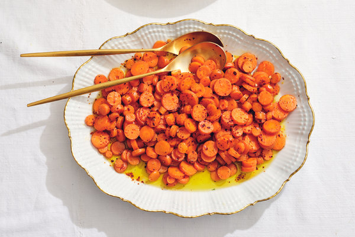

Garlicky, Buttered Carrots

Description
These carrots are cooked in fat (schmaltz, olive oil, butter),
with a pinch of something spicy (red-pepper flakes, cayenne, even hot paprika),
sort of half-steaming on top of each other until just tender (no mushy carrots here, please).
Ingredients
- 1/4 cup chicken fat, olive oil or butter
- 1/4 cup olve oil
- Pinch of red-pepper flakes
- 2 bunches carrots, topped removed (about 1 pound), thinly sliced into rounds
- kosher salt and freshly ground black pepper
- 1 garlic clove, finely chopped or grated
Steps
- Melt chicken fat in a large skillet over medium-high heat.
Add olive oil and red-pepper flakes, if using, swiriling to
bloom in a bit in the butter. Add carrots and season with salt
and pepper. Cook, tossing occasionally, until carrots are just
cooked through, 3 to 4 minutes.
- Remove pan from heat, and add garlic, tossing to coat and
transfer to serving bowl.
Back to the Recipes